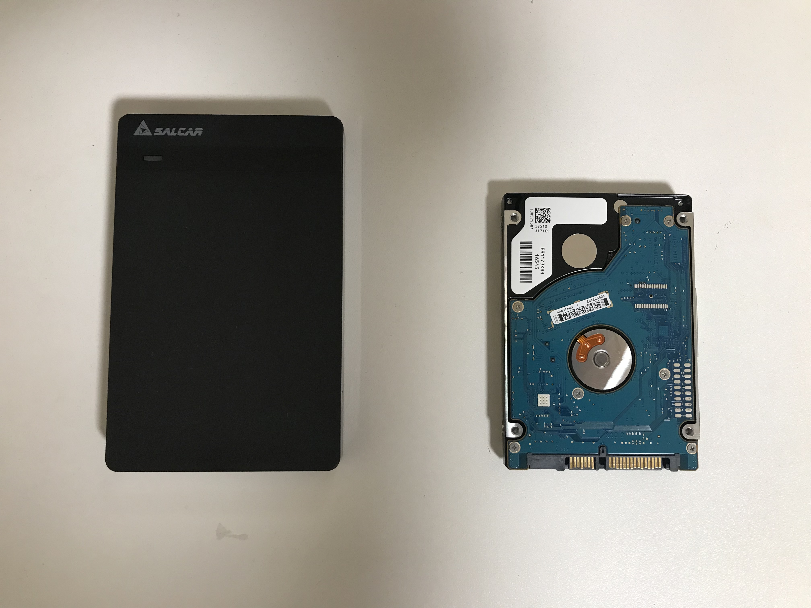
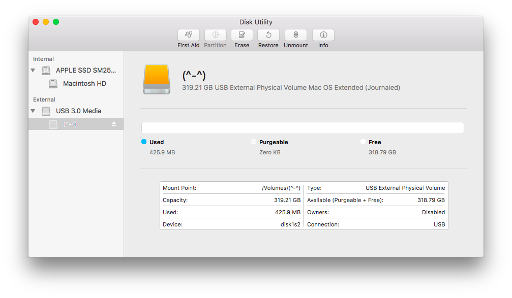
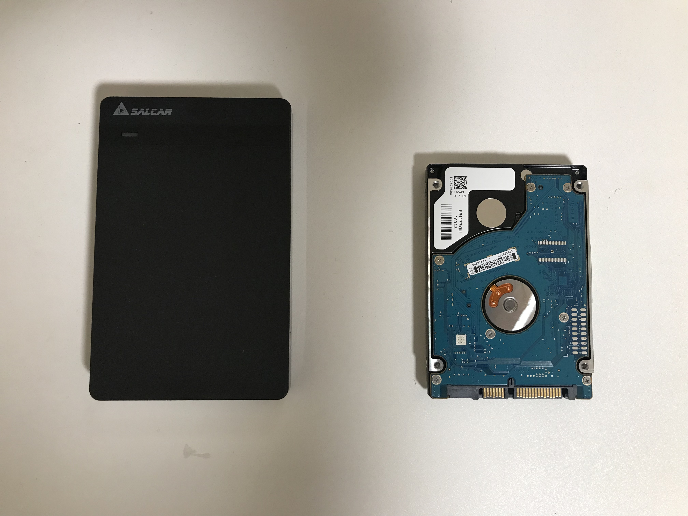
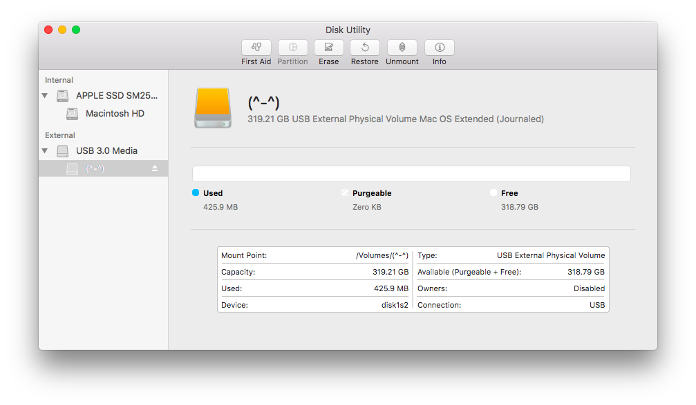

余った HDD を外付け HDD として再利用
Jun 29, 2018
MacBookProのバッテリー/メモリ/HDDをセルフ交換し，Ubuntuをデュアルブートするで余った，MacのHDDを外付け HDD にしてみた．

Salcar USB3.0 2.5インチ HDD/SSDケース
これを買った．
- AC アダプタ不要
- USB 3.0 にも対応
- 軽い
- 安い
接続も問題ない

USB 2.0 接続ではランプが白く点灯，3.0 接続では青く点灯 するのも地味によかった．

MacBookProのバッテリー/メモリ/HDDをセルフ交換し，Ubuntuをデュアルブートするで余った，MacのHDDを外付け HDD にしてみた．

これを買った．

USB 2.0 接続ではランプが白く点灯，3.0 接続では青く点灯 するのも地味によかった．